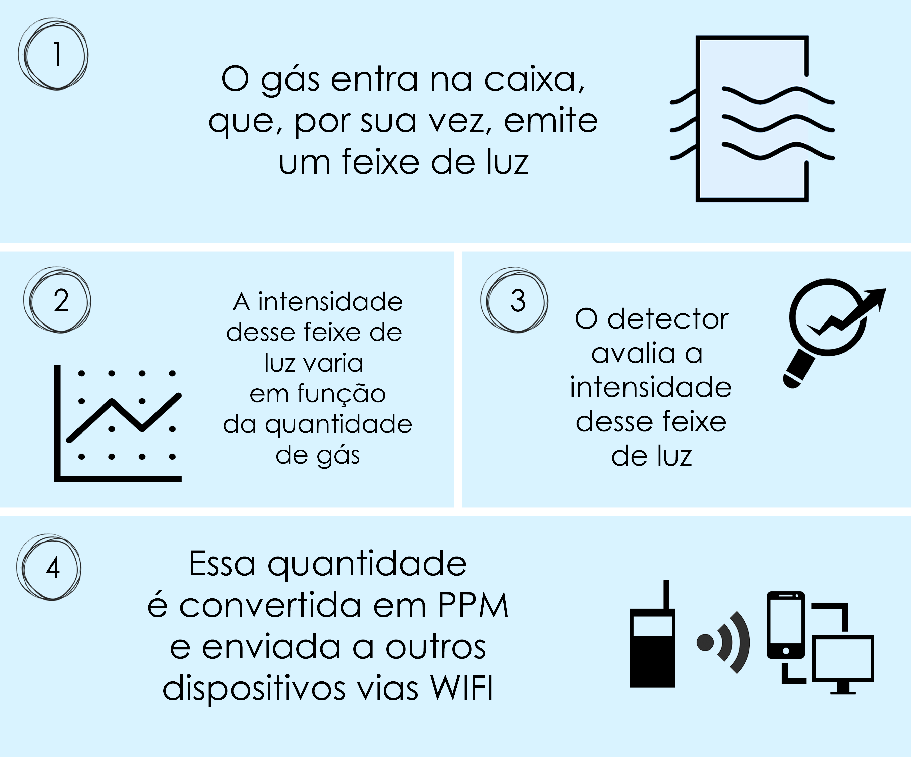

Concentração de CO2 na atmosfera com gráficos em tempo real.
Um projeto desenvolvido por:
O carbono é um elemento básico na composição dos organismos, tornando-o indispensável para a vida no planeta. Este elemento é estocado na atmosfera, nos oceanos, solos rochas sedimentares e está presente nos combustíveis fósseis. Contudo, o carbono não fica fixo em nenhum desses estoques. Existe uma série de interações por meio das quais ocorre a transferência de carbono de um estoque para outro. Muitos organismos nos ecossistemas terrestres e nos oceanos, como as plantas, absorvem o carbono encontrado na atmosfera na forma de dióxido de carbono (CO2). Esta absorção se dá através do processo de fotossíntese. Por outro lado, os vários organismos, tanto plantas como animais, libertam dióxido de carbono para a atmosfera mediante o processo de respiração. Existe ainda o intercâmbio de dióxido de carbono entre os oceanos e a atmosfera por meio da difusão.
O carbono é um elemento básico na composição dos organismos, tornando-o indispensável para a vida no planeta. Este elemento é estocado na atmosfera, nos oceanos, solos rochas sedimentares e está presente nos combustíveis fósseis. Contudo, o carbono não fica fixo em nenhum desses estoques. Existe uma série de interações por meio das quais ocorre a transferência de carbono de um estoque para outro. Muitos organismos nos ecossistemas terrestres e nos oceanos, como as plantas, absorvem o carbono encontrado na atmosfera na forma de dióxido de carbono (CO2).
Um sensor de dióxido de carbono serve para medir a sua quantidade na forma gasosa ou líquida. Esses sensores são muito utilizados em diversos campos científicos e indústrias como instrumento de estudo ou produto, como por exemplo ar condicionados que medem a qualidade do ar e usam a quantidade de gás carbônico como parâmetro ou até mesmo determinam a quantidade de pessoas em um ambiente devida a quantidade desse gás na habitação.
O aparelho tem três componentes principais: a fonte de luz, uma ferramenta que recebe a luz emitida e um detector. Durante a medição, a quantidade de luz que chega no lado rebecebimento varia de acordo com a concentração de gás carbônico presente no sensor, ou seja, quanto mais CO2 dentro no ambiente, menos luz será recebida para a medição. O resultado então é obtido em ppm que é a concentração de partículas por milhão.
Para visualizar o gráfico e os dados de medição, acesse o site por um computador ou baixe nosso aplicativo!
ESQUEMA DE FUNCIONAMENTO
Maior concentração
do dia
Menor concentração
do dia
Maior concentração
da semana
Menor concentração
da semana
999.99 ppm
999.99 ppm
999.99 ppm
999.99 ppm
Maior concentração
do mês
Menor concentração
do mês
Média da
semana
Média do
mês
999.99 ppm
999.99 ppm
999.99 ppm
999.99 ppm
Valores de referência, segundo a CETESB - baixo: abaixo de 999 ppm; médio: entre 999 ppm e 999 ppm; alto: acima de 999 ppm.
Para mais dados de análise, baixe o nosso aplicativo!
O projeto ConCO2 é resultado de um trabalho de pré-inciação-científica idealizado pelo professor Bernardo Luis Rodrigues de Andrade, da POLI-USP, desenvolvido por alunos da Escola Técnica Estadual de São Paulo (ETESP), sob a orientação dos professores......., tendo sido iniciado em setembro de 2018 e desenvolvido ao longo de 1 ano. O principal objetivo do projeto é facilitar o acesso a dados e informações sobre a emissão de gases de efeito estufa, principalmente o CO2, para a população geral. Para isso foi desenvolvido um site, um e-book e uma estação de medição de CO2, colocada na Raia Olímpica da USP (Cidade Universitária) na Marginal Pinheiros.
Por que na Marginal Pinheiros?
O equipamento é colocado na Marginal Pinheiros por dois principais fatores, entre eles estão:
- A facilidade para manutenção, realizada pela USP;
- Uma amostragem diversificada e representativa.
Qual a importância de se medir os níveis de CO2?
- Monitoramento do comportamento dos gases na atmosfera;
- Obtenção de dados quantitativos para a análise de qualidade de ar em determinado período de tempo;
- Prevenção de doenças causadas pela alta concentração de gases.
Possui mais alguma dúvida? Nos escreva sobre:
Lista de alunos participantes:
Bianca Tiemi Kuraoka Uemura
Brendon Angelo
Camilla Rosa Freire Sousa
Ederson Gonzaga
Gabriel Almeida
Gabriel Braga Lagrotaria
Gabriel Gomes Gameiro
Gustavo Palma
Henry Silva Castelli
Letícia Mendes
Lucas Costa Mignoli Ferreira da Silva
Mariana Toyshima Candermo
Matheus Henrique Maello
Paula Tamai
Pedro Buczinski
Romário Gomes de Souza
Stéfano Kenji